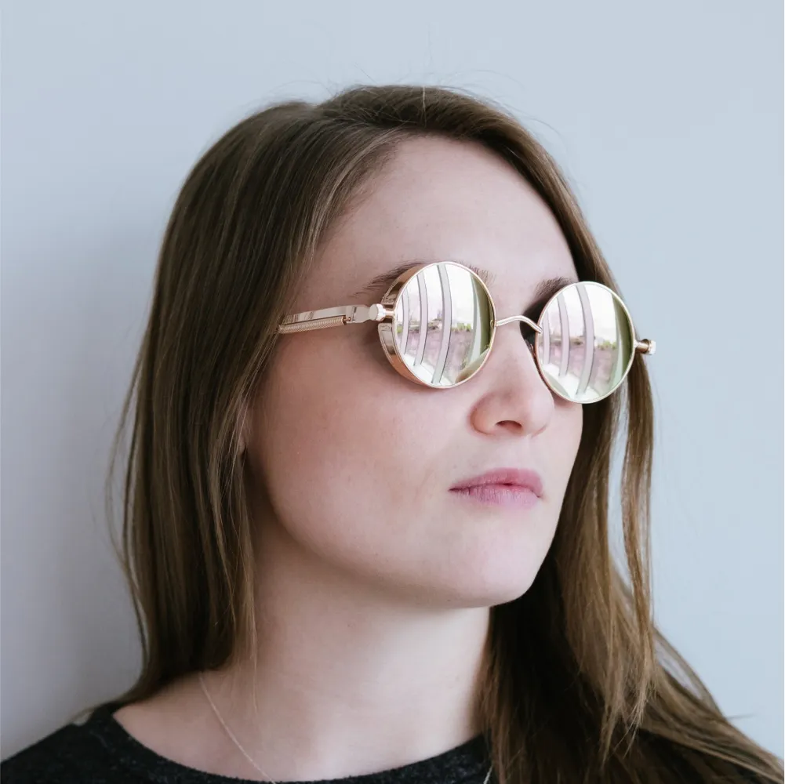

Loved by Builders
Thousands of site owners, freelancers, and agencies build with Ollie every day. Here is what a few of them think.
I love using WordPress but traditionally it has been hard to design in. Not any more! Now I can quickly build full page designs with beautiful patterns.
Alex Glacier
Freelance Designer
Ollie made it possible for our small team to ship client sites in days instead of weeks. The patterns just fit together.
Priya Natarajan
Agency Owner
The site editor finally clicked for me with Ollie. Everything is consistent, fast, and I never have to touch a line of CSS.

Sam Okafor
Course Creator